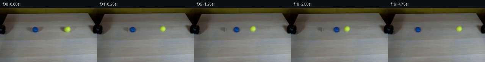

![首帧]()

Round 00
2026-11-05T05:38:59.613206+00:00像素候选变化代码 +378/−0inspection 更新
pixels d59ae99d2ffdbfae · code e910ea31e82abed3
查看本轮 generate.py 真实 diff
--- previous/generate.py +++ current/generate.py @@ -0,0 +1,378 @@ +#!/usr/bin/env python3 +"""generate.py – PixelWorld-Text: tennis ball collision animation. + +Reads `first_frame.png` and `prompt.txt`. Generates 20 RGB frames at 256×144, +saves `pixels.npz`, `frames/*.png`, `inspection.png`, `transition_check.png`, +and `index.html` via artifact_io.py. +""" + +from pathlib import Path +import numpy as np +from PIL import Image, ImageDraw +from scipy.ndimage import gaussian_filter +import artifact_io + +CASE_DIR = Path(__file__).parent +TMP = CASE_DIR / ".tmp" +TMP.mkdir(exist_ok=True) + +W, H = 256, 144 +N_FRAMES = 20 +FPS = 4 + +# ── 1. Load frame 0 ────────────────────────────────────────────────────────── +frame0 = np.array(Image.open(CASE_DIR / "first_frame.png")).astype(np.float64) +assert frame0.shape == (H, W, 3), frame0.shape + +# ── 2. Ball masks via color thresholding ───────────────────────────────────── +# Blue ball: blue channel dominates +blue_mask = ( + (frame0[:, :, 2] > frame0[:, :, 0] + 18) + & (frame0[:, :, 2] > frame0[:, :, 1] + 18) + & (frame0[:, :, 2] > 55) +) + +# Yellow ball: red & green dominate, low blue +yellow_mask = ( + (frame0[:, :, 0] > 140) + & (frame0[:, :, 1] > 140) + & (frame0[:, :, 0] > frame0[:, :, 2] + 18) + & (frame0[:, :, 1] > frame0[:, :, 2] + 18) + & (frame0[:, :, 2] < 120) +) + +# Refine: keep only the largest connected component for each mask +def keep_largest_component(mask): + from scipy.ndimage import label as label_nd + labeled, n = label_nd(mask) + if n == 0: + return mask + sizes = np.bincount(labeled.ravel())[1:] + largest = np.argmax(sizes) + 1 + return labeled == largest + +blue_mask = keep_largest_component(blue_mask) +yellow_mask = keep_largest_component(yellow_mask) + +# Dilate slightly to capture soft edges +from scipy.ndimage import binary_dilation, binary_erosion +blue_mask_dilated = binary_dilation(blue_mask, iterations=2) +yellow_mask_dilated = binary_dilation(yellow_mask, iterations=2) + +# ── 3. Create clean background via horizontal inpainting ───────────────────── +# For each row in the ball-travel zone (y≈45–70), interpolate between +# clean left pixels (x=50–84) and clean right pixels (x=191–210). + +ball_mask_combined = blue_mask_dilated | yellow_mask_dilated + +# Define a wider "travel corridor" where balls will pass through +travel_y0, travel_y1 = 45, 72 +travel_x0, travel_x1 = 82, 192 + +bg = frame0.copy() + +# Horizontal inpainting: for each row, fill the travel corridor +# using interpolation between left and right reference clean zones. +left_ref_x0, left_ref_x1 = 50, 82 # clean area left of blue ball +right_ref_x0, right_ref_x1 = 192, 210 # clean area right of yellow ball + +for y in range(travel_y0, travel_y1): + # Compute reference colors (median of clean reference columns) + left_ref = np.median(bg[y, left_ref_x0:left_ref_x1, :], axis=0) + right_ref = np.median(bg[y, right_ref_x0:right_ref_x1, :], axis=0) + + # Linear interpolation across the corridor + n_cols = travel_x1 - travel_x0 + for i, x in enumerate(range(travel_x0, travel_x1)): + t = i / max(n_cols - 1, 1) … diff truncated; 291 more lines …